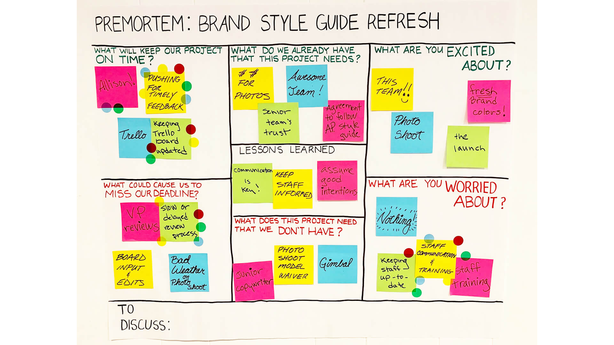

5 AI: Succesfacoren voor strategische implementatie / Roadmap
Succesvol inzetten van AI vraagt méér dan technologie; het vereist een organisatiebrede visie en aanpassing van bestaande werkwijzen. In deze sessie ontdekken we welke organisatorische voorwaarden nodig zijn om AI-strategie succesvol uit te voeren.
5.1 AI Experimentatie & Waardecreatie Framework
Om AI-initiatieven effectief te prioriteren, hanteren we een portfoliobenadering gebaseerd op twee dimensies: implementatierisico en waardecreatie potentieel.
Quick Wins
Onmiddellijke Waarde
Laag risico, hoog potentieel
Strategic Bets
Transformationele Doorbraken
Hoog risico, hoog potentieel
Low Priority
Efficiency Plays
Laag risico, laag potentieel
Learning Labs
Capability Building
Hoog risico, laag zichtbaar potentieel
De vier kwadranten:
- Quick Wins (laag risico, hoog potentieel): Direct waarde leveren, vertrouwen opbouwen
- Strategic Bets (hoog risico, hoog potentieel): Transformationele doorbraken die dynamische capaciteiten vereisen
- Learning Labs (hoog risico, laag zichtbaar potentieel): Ontdekken wat je nog niet weet. De toekomst is onvoorspelbaar – Learning Labs creëren ruimte voor serendipiteit en bouwen capaciteiten op voor kansen die je nu nog niet kunt voorzien
- Low Priority (laag risico, laag potentieel): Efficiëntie-verbeteringen, leerplatform voor beginners
Portfolio-allocatie: Streef naar 60% Quick Wins, 20% Strategic Bets, 15% Learning Labs, 5% Low Priority.
Transfer als sleutel: Een effectief AI-portfolio vereist dat alle kwadranten tegelijkertijd actief zijn. De kunst zit in de transfer – de continue stroom van inzichten, ideeën en innovaties tussen de kwadranten. Learning Labs voeden Strategic Bets met nieuwe ontdekkingen; succesvolle experimenten promoveren naar Quick Wins; en Quick Wins genereren data en vertrouwen die weer nieuwe Strategic Bets mogelijk maken.
5.2 Organisatorische voorwaarden: Dynamic Capabilities
Om dit portfolio-framework succesvol toe te passen, zijn organisatorische voorwaarden nodig. Het Dynamic Capabilities model beschrijft drie kernprocessen: sensing (kansen identificeren), seizing (kansen verzilveren) en transforming (organisatie aanpassen).

Succesvolle AI-implementatie vereist aandacht voor vier pijlers: Cultuur (experimenteren, samenwerken, continue ontwikkeling), Structuur (wendbaar organiseren, AI-kennis centraliseren, data als ruggengraat), Systemen (schaalbare platforms, naadloze integratie, governance) en Human Capital (upskilling, verandermanagement, talent aantrekken). Deze pijlers vormen de basis voor de dynamische capaciteiten die nodig zijn om Strategic Bets aan te kunnen.
Doel van de sessie:
Jullie gaan ervaren hoe AI kan helpen bij het snel omzetten van ideeën naar werkende prototypes. Door een visuele mockup te transformeren naar een functioneel systeem, ontdekken jullie de mogelijkheden en beperkingen van AI-ondersteunde ontwikkeling en krijgen jullie inzicht in de praktische toepassingen voor jullie organisatie.
Tijd: 75 minuten
Werkwijze
- Introductie (5 minuten)
- In deze activiteit onderzoeken we: Hoe kan AI helpen om ideeën snel om te zetten naar werkende prototypes?
- De opbrengsten van deze activiteit kunnen worden meegenomen in de Roadmap als concrete toepassingsmogelijkheden.
- Zie deze demo ter verduidelijking van het concept.
- In deze activiteit onderzoeken we: Hoe kan AI helpen om ideeën snel om te zetten naar werkende prototypes?
- Creatie van mockups (20 minuten)
- In kleine groepjes (3-4 personen) maken jullie op een groot vel papier een mockup van een systeem dat jullie graag zouden willen hebben.
- Gebruik post-its, stiften en andere beschikbare materialen om de interface en functionaliteit te visualiseren.
- Denk aan: Welk probleem lost dit systeem op en voor wie?
- In kleine groepjes (3-4 personen) maken jullie op een groot vel papier een mockup van een systeem dat jullie graag zouden willen hebben.
- Van mockup naar prototype (20 minuten)
- Maak een duidelijke foto van jullie mockup.
- Ga naar een AI-tool (Claude, ChatGPT 4o met Canvas, Gemini of Lovable).
- Voer de volgende prompt in:
“Please build a system for [beschrijving van het doel van het systeem] based on the mockup in the image. Use plain HTML, JS and Bootstrap” en voeg de foto van jullie mockup toe.
- Test het gegenereerde prototype en verbeter het ontwerp door aanvullende prompts te gebruiken indien nodig.
- Let op aspecten als functionaliteit, gebruiksvriendelijkheid en visuele stijl.
- Maak een duidelijke foto van jullie mockup.
- Marktstand voorbereiden (10 minuten)
- Bereid een korte presentatie voor over jullie prototype.
- Bespreek in jullie groepje:
- “Wat kan het systeem doen en voor wie is het bedoeld?”
- “Welke verrassingen of uitdagingen kwamen jullie tegen bij het gebruik van AI?”
- “Hoe zou dit proces jullie werk in de toekomst kunnen veranderen?”
- “Wat kan het systeem doen en voor wie is het bedoeld?”
- Bereid een korte presentatie voor over jullie prototype.
- Marktplaats van prototypes (15 minuten)
- Elke groep presenteert hun prototype bij hun ‘marktstand’.
- De andere deelnemers lopen rond en bekijken alle prototypes (marktplaats-formaat).
- Moedig discussie aan over de mogelijkheden die deze manier van werken biedt.
- Elke groep presenteert hun prototype bij hun ‘marktstand’.
- Afronding en reflectie (5 minuten)
- Reflecteer gezamenlijk op de ervaring en de implicaties voor de organisatie.
- Bespreek welke inzichten jullie meenemen naar de strategische AI-Roadmap, zoals:
- Mogelijke use cases voor prototyping met AI
- Benodigde vaardigheden en resources
- Kansen voor versnelling van ontwikkelprocessen
- Reflecteer gezamenlijk op de ervaring en de implicaties voor de organisatie.
Doel van de sessie:
AI-kansen categoriseren in het 4-kwadrantenmodel en een gebalanceerd AI-portfolio ontwikkelen dat aansluit bij jullie strategische analogie.
Tijd: 60 minuten
Werkwijze:
- Introductie (10 minuten)
- Presentatie van het AI Portfolio Matrix framework
- Uitleg categorisatie-criteria: implementatierisico vs. waardecreatie potentieel
- Portfolio-allocatie richtlijn: 60% Quick Wins, 20% Strategic Bets, 15% Learning Labs, 5% Low Priority
- Use Case Identificatie (15 minuten)
- Werk in groepjes van 3-4 personen
- Start met jullie strategische analogie uit de ochtend-sessie
- Identificeer 4-6 AI-kansen die aansluiten bij jullie strategische keuze
- Score elke use case op:
- Implementatierisico (1-5): technische complexiteit, data-beschikbaarheid, organisatorische gereedheid
- Waardecreatie potentieel (1-5): omzetimpact, kostenbesparing, concurrentievoordeel
- Portfolio Mapping (15 minuten)
- Plaats alle use cases in de 4 kwadranten op basis van jullie scores
- Check de balans: sluit jullie verdeling aan bij de 60/20/15/5 richtlijn?
- Bepaal de volgorde: welke Quick Wins pakken jullie als eerste aan?
- Dynamic Capabilities Check (10 minuten)
- Voor Strategic Bets: welke sensing, seizing en transforming capaciteiten zijn vereist?
- Voor Learning Labs: welke capaciteiten bouwen jullie hiermee op?
- Zijn er Learning Labs die kunnen “promoveren” naar Quick Wins?
- Presentaties (10 minuten)
- Elk groepje presenteert hun portfolio en prioritering
- Korte feedback van de andere groepen
Verwachtingen:
- Maak een eerste opzet van jullie AI-portfolio die aansluit bij de strategische analogie.
- Breng focus aan: welke Quick Wins eerst, welke Strategic Bets later?
- Wees bereid feedback te geven én te ontvangen.
Doel van de sessie:
Deelnemers maken een visuele weergave (poster) van hun AI-portfolio en roadmap. Via peer feedback scherpen zij hun strategie aan.
Tijd: 45 minuten
Werkwijze:
- Introductie en uitleg (5 minuten)
- Laat zien hoe een roadmap-poster eruit kan zien: de 4 kwadranten met use cases + een tijdlijn.
- Suggestie voor tijdlijn: Q1-Q2 (Quick Wins), Q2-Q3 (Learning Labs parallel), Q3-Q4 (Strategic Bets).
- De nadruk ligt op duidelijkheid en prioriteiten.
- Laat zien hoe een roadmap-poster eruit kan zien: de 4 kwadranten met use cases + een tijdlijn.
- Posters maken (15 minuten)
- Per organisatiegroep maakt iedereen een poster met:
- De 4 kwadranten met jullie use cases gepositioneerd
- Een tijdlijn met mijlpalen per kwadrant
- Benodigde resources en verwachte resultaten per fase
- Per organisatiegroep maakt iedereen een poster met:
- Galerij-wandeling (10 minuten)
- Hang de posters op in de ruimte.
- Deelnemers lopen rond en lezen elkaars posters.
- Geef feedback via post-its: “Klopt de categorisatie?” / “Is de volgorde realistisch?”
- Hang de posters op in de ruimte.
- Korte Reflectie (10 minuten)
- Postereigenaren beantwoorden vragen.
- Waar zie je overeenkomsten? Waar unieke invalshoeken?
- Noteer verbeterpunten op je eigen poster.
- Postereigenaren beantwoorden vragen.
- Afronding (5 minuten)
- Pas waar nodig de roadmap-poster aan of noteer opvolgacties.
Verwachtingen:
- Wees concreet: welke Quick Wins eerst, welke Strategic Bets later?
- Geef constructieve feedback over categorisatie en volgorde.
- Neem verbeterpunten direct mee.
Doel van de sessie:
Identificeren welke risico’s AI-initiatieven per kwadrant kunnen doen mislukken, en welke kansen versnelling kunnen bieden.

Tijd: 30 minuten
Werkwijze:
- Introductie (5 minuten)
- Uitleg van het concept ‘pre-mortem’: stel je voor dat je project is mislukt en verken waarom.
- We focussen op kwadrant-specifieke risico’s en kansen.
- Groepsopdracht – Pre-mortem per kwadrant (15 minuten)
- Werk in groepjes van 3-4 personen.
- Per kwadrant, analyseer:
- Quick Wins: Wat kan directe waardecreatie vertragen? (bijv. databeschikbaarheid, adoptie)
- Strategic Bets: Welke dynamische capaciteiten missen we mogelijk? (sensing, seizing, transforming)
- Learning Labs: Wat kan het leerproces verstoren? Hoe voorkomen we dat experimenten blijven hangen?
- Opportunity Mapping: Welke Learning Labs kunnen “promoveren” naar Quick Wins? Welke kansen versnellen de roadmap?
- Rangschik risico’s en kansen op urgentie en impact.
- Werk in groepjes van 3-4 personen.
- Plenaire bespreking (5 minuten)
- Elk groepje deelt één cruciaal risico en één kans.
- Korte discussie: Hoe mitigeren? Hoe kansen benutten?
- Elk groepje deelt één cruciaal risico en één kans.
- Afronding (5 minuten)
- Schrijf 2-3 concrete acties op om de belangrijkste risico’s te verkleinen.
- Bewaar deze als checklijst voor je AI-portfolio.
- Schrijf 2-3 concrete acties op om de belangrijkste risico’s te verkleinen.
Verwachtingen:
- Denk scherp na over kwadrant-specifieke risico’s.
- Kom met concrete mitigatiestrategieën.
- Wees alert op kansen om initiatieven te versnellen of te promoveren tussen kwadranten.
5.3 Aanvullend inspiratiemateriaal
5.3.1 Artikel: Investigating the influence of artificial intelligence on business value in the digital era of strategy.
Dit artikel uit 2023 van Perifanis en Kitsios is een systematische literatuurstudie naar de invloed van kunstmatige intelligentie (AI) op de bedrijfswaarde in het kader van digitale transformatie. De auteurs benadrukken hoe de integratie van AI-capaciteiten met bedrijfs- en IT-strategieën essentieel is om betere resultaten te behalen en digitale transformatieactiviteiten op elkaar af te stemmen. Een kernonderwerp daarbij is ‘AI-ambidexteriteit’: het tegelijkertijd inzetten van zowel routinematige als innovatieve AI-toepassingen als motor voor strategische flexibiliteit. Het onderzoek richt zich erop te begrijpen hoe organisaties AI effectief kunnen inzetten om hun strategische wendbaarheid te vergroten en substantiële bedrijfsvoordelen te realiseren, met bijzondere aandacht voor de rol van verantwoord AI-beheer (Perifanis and Kitsios 2023).
5.3.2 Rapport: Where’s the Value in AI?
Deze bron is waardevol omdat ze rechtstreeks ingaat op de vraag waar AI waarde kan opleveren—iets wat onmisbaar is voor elke AI-strategie. De publicatie wijst erop dat veel organisaties vastlopen in de proof-of-conceptfase en biedt inzichten in hoe AI-koplopers écht waarde uit de technologie halen. De rapportage heeft een praktische insteek, benoemt waar andere bedrijven tekortschieten en geeft suggesties voor verbetering van AI-trajecten. Voor een Masterclass is dit document uitermate geschikt, omdat het een praktische benadering van AI-implementatie geeft met nadruk op waardecreatie (“Where’s the Value in AI?” 2024).
5.3.3 Video: Developing a Gen AI Strategy for your Company
In deze webinar wordt besproken hoe AI-capaciteiten praktisch binnen een bedrijf kunnen worden geïntegreerd. Zo komen de inzet van beeldgeneratie en spraakherkenning aan bod en wordt duidelijk hoe deze tools bedrijfsprocessen kunnen verbeteren. De transcriptie bespreekt ook een bedrijf dat gepersonaliseerde diensten aanbiedt met behulp van AI, wat goed illustreert hoe AI kan bijdragen aan een betere klantervaring. Daarnaast gaat het in op de manier waarop een organisatie AI-native kan worden, in plaats van AI simpelweg toe te passen op bestaande processen. Daarmee biedt deze bron een actueel en praktisch voorbeeld van hoe een organisatie een generatieve AI-strategie kan opstellen. (Digital Data Design Institute at Harvard 2023).
5.3.4 Video: Common business use cases for generative AI
In deze video verkennen experts een aantal praktische toepassingen van generatieve AI in het bedrijfsleven. Ze bespreken use-cases zoals productcatalogisering en klantenservice, en laten zien hoe AI kan worden ingezet om concrete zakelijke uitdagingen op te lossen. De voordelen van samenvattingsfuncties en het belang van experimenteren met AI worden hierbij benadrukt. Daarnaast worden inzichten gedeeld wat betreft de technische aspecten en vereisten voor het implementeren van generatieve AI (Google Cloud 2023).
5.3.5 Video: Never just tech - Unlocking the full value of gen AI
Onderzoek van McKinsey schat dat generatieve AI (gen AI) jaarlijks tot 4,4 biljoen dollar kan bijdragen aan de wereldeconomie. In uiteenlopende sectoren en functies zou gen AI kunnen worden ingezet om bureaucratische processen te verkorten, klantreizen te verbeteren en het proces van coderen en contentcreatie te versnellen. Tijdens een recente editie van McKinsey Live bespraken partner Jessica Lamb en senior partner Gayatri Shenai de potentie van gen AI, de uitdagingen die ermee gepaard gaan en gaven zij bestuurders advies over de integratie van gen AI in hun organisaties. (McKinsey & Company 2024).